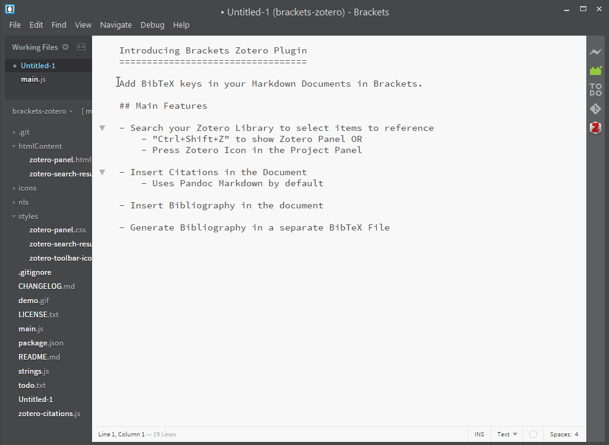

Brackets Zotero Integration Extension
Brings the power of Zotero to Adobe Brackets

Designed to support Scholarly Markdown + Pandoc / Scholdoc + LaTeX workflow
Animated GIF Demo
If a (still) picture is worth a thousand words then surely an (animated) GIF will be worth a thousand pictures.
So, see the extension in action!

Main Features
Scans the document for in-text citations (BibTeX keys)
Search your Zotero Library to select items to reference
Insert Citations in your Scholarly Markdown documents
Insert Bibliography in the document
Generate Bibliography in a separate BibTeX File
Planned
Project-wide Bib File Management
Usage
Download a custom Zotero Better BibTeX which provides search capabilities.
Enable Export on HTTPs in Better BibTex preferences.
Generate bibtex keys for all zotero items. If no bibtex key in “extra” field, the extension ill throw an error. See this for guide for making unique bibtex keys.
Generate BibTeX Keys
It’s important that BibTeX keys are unique because they link your Sholarly work to the Reference database. By default BBT generates BibTeX keys with [auth][year] format. BBT gives you complete control over defining your own key format. Go through the Configurable citekey generator section on the Citation Keys page to learn how to configure BBT to generate
Contributing
Head over to the projects wiki for guide to contributing.
Acknowledgments
Special thanks to the man behind Better Bib(La)TeX for swift merging of the proposed functionality that this plugin leverages and greatly improving and optimizing the contributed code.
Copyright © 2015 | Wasif Hasan Baig
Source code is released under MIT License

Brackets Zotero Integration Extension (Website) by Wasif Hasan Baig is licensed under a Creative Commons Attribution 4.0 International License.
Share the Word…